Ендодонтія · журнал «ДентАрт» 2025 №3
Можливості сучасної ендодонтії. Апікальна хірургія зуба 46
THE POSSIBILITIES OF MODERN ENDODONTICS. APICAL SURGERY OF TOOTH 46
Кейс-репорт, опис клінічного випадку, який я підготував, буде цікавий для всіх стоматологів, тому що мова піде про тактику та підхід сучасного ендодонтиста. Рідко коли суміжний спеціаліст працює окремо від команди. Сучасні клініки при формуванні свого штату шукають собі в команду лікаря-терапевта-ендодонтиста, щоб завжди була можливість лікування та переліковування зубів з ускладненнями карієсу і не тільки. Травми зубів, неповний апексогенез, спрямована реплантація, апікальна хірургія та інші маніпуляції, які використовують для збереження зубів, – в усьому цьому сучасний стоматолог має бути професіоналом. Мій досвід говорить, що тільки вертикальна фрактура зубів (VRF) і сильно зруйнований карієсом зуб за відсутності віддаленого ортопедичного прогнозу є показаннями до видалення. Кожен сучасний хірург-стоматолог точно знає, що свій зуб завжди кращий за імплантат, але ситуації бувають дуже варіабельні, і тільки командний підхід забезпечує правильне рішення в тій чи іншій клінічній ситуації.
Ключові слова: біокераміка, МТА, апікальна хірургія, реферативна практика, резекція, гемостаз, ретроградне препарування.
У наш час дуже розвинута реферативна практика, яка «направляє» пацієнтів з інших установ, або це може бути інтернет, коли пацієнти самі шукають лікаря. Тобто лікар, який не займається ендодонтією, перенаправляє пацієнта до ендодонтиста, і він автоматично стає лікарем-рефералом. Власне, реферативна практика дає можливість багатьом пацієнтам вирішити питання збереження зуба в іншого спеціаліста вузької спрямованості, з іншої клініки і часто навіть з іншого міста. Питання полягає в тому, що не в кожній клініці є ендодонтист, який зробить правильно таку маніпуляцію, як апікальна хірургія. Знаю багато прикладів, коли цю маніпуляцію виконують у парі ендодонтист і хірург. Кожен з них здійснює свій етап лікування. Хірургічна частина – це формування клаптя, його відшарування, резекція апікальної частини зуба і цистектомія. Лікар-ендодонтист має своє завдання – використовуючи мікроскоп, потрібно спочатку оцінити корінь у місці резекції на наявність чи відсутність тріщини, а також кут, під яким хірург зрізав апекс, профарбувати корінь і перевірити, чи немає виходу латерального каналу або тріщини. Якщо цього не виявлено, його теж необхідно опрацювати інструментально і запломбувати. Ці маніпуляції проводяться на збільшенні від 12 до 19 крат, тобто збільшенні, яке хірург не використовує. Далі слід розпломбувати спеціальними ультразвуковими насадками апікальну частину на певну глибину, яку знає і планує ендодонтист, і, промивши апекс, запломбувати апікальну частину. Уже після цього хірург має накласти шви. Для накладання швів потрібно використовувати нитку розміру 5.0–6.0. У крайніх випадках використовують 7.0. Ці розміри ниток досить тонкі, і для накладання швів у сучасній хірургії та пародонтології необхідне використання збільшення (мікроскоп або бінокуляри). Шви знімають через 48–72 години. Раніше використовували шовк, але він призводив до інфікування, а сучасний монофеламентний матеріал запобігає цьому.
Отже, переходимо до нашого клінічного випадку.
Пацієнтка звернулася в клініку заради збереження зуба 46, в якому давно вже було проведене ендодонтичне лікування, зуб було відновлено куксовою литою конструкцією і коронкою. Якщо зробити спробу розібрати всю цю конструкцію заради переліковування, а це є протипоказанням у даному випадку, то можна потім не зібрати зуб заново. Пацієнтка у цьому випадку не планувала заміну конструкції взагалі. Ще одним основним критерієм у виборі способу лікування став той факт, що у пацієнтки було обмаль часу, щоб у план лікування ще включити лабораторні етапи. Відтак у нас були чіткі показання до проведення апікальної хірургії. Пацієнтка живе в іншому місті, приїжджає лише на день. Тому операцію ми встигаємо провести, а зняття швів зробить інший спеціаліст.
Перед початком операції потрібне проведення прицільної рентгенографії та КПКТ для правильного аналізу наявного процесу. Слід виміряти довжину кореня, об'єм хронічного процесу, відстань оперативного втручання від ментального отвору, анатомію апікальної частини, товщину кортикальної пластини, нахил коренів і на яку глибину фреза Ліндемана при резекції має зайти в операційне поле. Що ще важливо – це оцінка щічного коридору: наскільки рухливі губа і щока, наскільки легко вони відтягуються вбік. Це важливо, тому що при проведенні такої операції пацієнт лежить на боці.
Отже, довжина зуба 21 мм, а до ментального отвору – 12 мм, що говорить про безпечність операції.
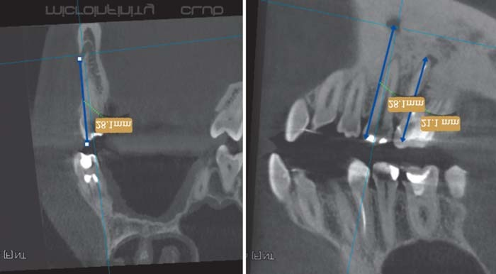
Для такого типу доступу використовується трикутний клапоть і проводиться внутрішньоборозенковий сулькулярний розріз. Класично використовують лезо 15 С. Бажано, щоб ручка скальпеля була округлої ергономічної форми, тоді розріз можна робити, сидячи, в мікроскоп на 12 годину. Є ситуації, коли оператор і асистент сидять на 9 та 3 годину відповідно. Така посадка використовується для того, щоб було зручно утримувати щоку та м'які тканини і була можливість заведення скальпеля під правильним кутом.
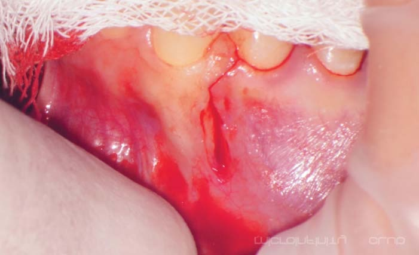
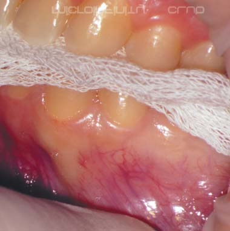
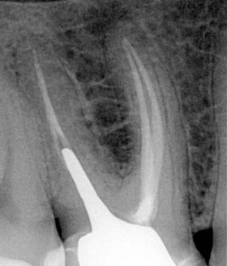
Формування та відшарування клаптя роблять дуже обережно, щоб уникнути розриву. Потрібно враховувати біотип слизової оболонки. Один зі зручних ретракторів для такої маніпуляції – це ретрактор Прічарда (інколи Молта). Класикою утримування клаптя залишається ретрактор Міннесота. Але потрібно розбиратися в сучасних ретракторах, які дуже ергономічні та легкі, і до них належать авторські розробки Kim Track та Lee Track. Ці моделі мають змінні, різної конфігурації насадки-ретрактори, які можна адаптувати і згинати. Після стерилізації вони набувають знову свою форму.
Після правильно проведеної анестезії при розрізах крові практично немає, і ці маніпуляції проводять легко, не втрачаючи візуальний контроль. При відшаруванні клаптя крові також небагато, і асистент з легкістю утримує робоче поле безкровно. Деякі ділянки можна обробити сульфатом заліза, щоб позбутися підтікань крові.
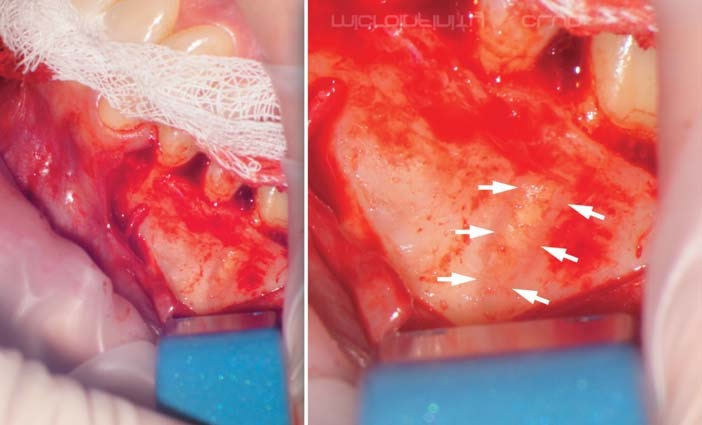
На фото добре видно стан робочого поля і можна роздивитися мезіальний корінь зуба 46. Кістка на цій ділянці досить тонка, і за допомогою пародонтального зонда можна отримати відповідь, де саме слід починати робити трепанаційне вікно. Таке вікно роблять за допомогою або твердосплавних борів, або фрез – усе залежить від клінічної ситуації. Вікно має чіткі параметри розмірів, але на момент операції власне сам клінічний випадок диктує, якого розміру буде доступ. Головне – пам'ятати, що кістка нагрівається під час трепанації, плюс анестетик зменшує кровотік, тому слід використовувати велику кількість води і хірургічний турбінний наконечник з кутом головки 45°, у якого потік повітря не спрямований у рану, а виходить з іншого боку.
Після зробленого доступу необхідно виміряти довжину, на яку буде робитися резекція кореня. Для резекції найкраще підходить фреза Ліндемана, яка має неактивний кінчик, тому вона буде безпечною при зануренні в рану. Резекція має свої відстані та розміри – достатньо почитати, де містяться апікальні дельти і розгалуження та істмуси. Для оцінки ми маємо використати метиленовий синій. Цей барвник водорозчинний і має темно-синій або темно-зелений колір, тому можна сміливо профарбовувати ним усе навколо апекса. Усі патологічні тканини потім дуже легко виявляти, особливо в мікроскоп. Для оцінки поверхні зрізу, який виконується під кутом 45° (у підручниках можна зустріти 0°), за допомогою мікрохірургічних дзеркал проводиться візуальна оцінка, щоб виявити перешийки, тріщини, можливі резорбції та інше.
Що ж до оглядового інструментарію, то потрібно знати представників, у яких можна придбати дзеркала. Спочатку вам знадобляться дзеркала номери 3×3 мм, 3×6 мм, 5 мм. У наборі є 6 дзеркал і окрема ручка. Тому в цьому випадку необхідно підготуватися.
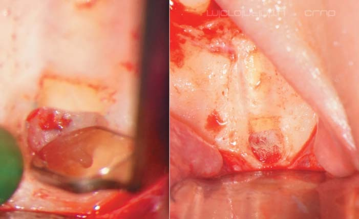
Отже, знаючи, що є істмус, слід підібрати ультразвукову насадку для розпломбування кореневих каналів. Насадки йдуть від 3 мм, 6 мм до 9 мм. У цьому випадку нам було достатньо 3 мм довжини. Важливо під час препарування не втратити вісь каналів і не зробити перфорацію. Відпрепаровану частину потрібно промити і висушити. Раніше використовували, та й нині використовують підготовлені стерильні паперові штифти в достатній кількості. Але найкращим способом є використання іригатора STROPKO.
На етапі епінефринових кульок слід пам'ятати, яку кількість їх використали, щоб не забути в рані жодної. Їх дуже добре видно на великому збільшенні, але і це не панацея. Потрібно рахувати! Це ще одна з причин, чому цю маніпуляцію має проводити лікар, який використовує мікроскоп.
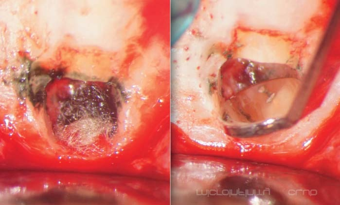
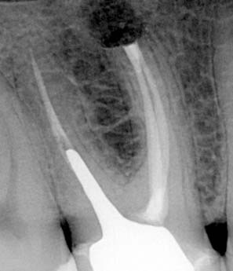
Обтурація каналів проводиться цементами. Можна використати або МТА, або матеріал, який уже досить давно на ринку – біокераміку (ВС). Я провів багато операцій біокерамічним матеріалом. Це дуже зручний гідрофільний матеріал, який не потрібно замішувати. Він розфасований у спеціальні шприци від 2 г. У шприцах він не твердне, і можна завжди контролювати стан залишку. На початку, коли біокераміка тільки з'явилася, ми користувалися продукцією американського виробника EndoSequence® BC Sealer, пізніше отримали цей силер від компанії FKG, ще пізніше зайшов корейський виробник, і тепер можна спробувати матеріал C-Root (MDS), яким я працюю уже понад рік. Отже, вибір на ринку став набагато більший, і кожен може вибирати те, що йому потрібно.
Для етапу обтурації потрібно мати спеціальний інструмент, яким біокераміка вноситься у відпрепаровану частину каналу. Для цього слід підготувати стерильне скло, на якому можна надати необхідну форму порції ВС, взяти цю порцію інструментом, обережно донести до зони операції і внести в канал. Конденсувати матеріал також потрібно. Для цього використовується апікальний конденсер – 3 мм, 4,5 мм та 6 мм. Це робиться, щоб у матеріалі не було пор і мікровідривів. Ще можна скористатися технікою LID, коли попередньо вноситься ВС силер.
Коли вдалося обтурувати, слід провести контроль якості обтурації. На цьому етапі можна перевірити, як операторові вдалося внести матеріал і ущільнити його. Далі треба перевірити, чи всі епінефринові кульки ви забрали (перерахувати), викликати кров, яка має заповнити собою місце операції (ділянку резекції). Заповнювати кістковими замінниками дефект не рекомендується з точки зору поганого віддаленого контролю – ви ніколи не зможете зрозуміти, гоїться дефект чи ні. Тому найкращий будівний матеріал – це кров. Можна допомогти загоєнню дефекту, вносячи в дефект PRF мембрану.
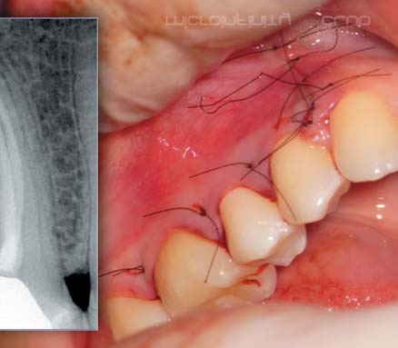
Пацієнти фактично не п'ють знеболювальних або НСПЗ препаратів після завершення дії анестетика. Призначати антибіотики у цьому випадку буде навіть помилкою. Потрібно попередити пацієнта про набряки і розповісти про правила поведінки на 48–72 години, доки ми не знімемо шви. Завжди бажано тримати контакт із пацієнтом упродовж 2-х днів, і це робота адміністраторів. Після зняття швів я запрошую пацієнтів на огляд через 7–10 днів, щоб оцінити стан слизової оболонки і зробити фото для портфоліо. Пацієнта записують через три місяці для контролю, а вже через пів року бажано отримати ще один прицільний знімок і КПКТ. У нашому випадку отримати КТ вдалося через рік, але це теж нормальний термін, якщо пацієнта ніщо не турбує!
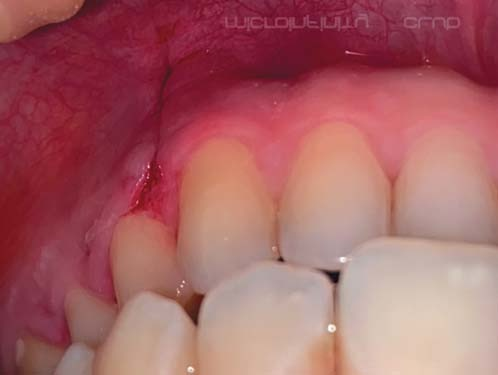
Отриману КТ потрібно оцінити і співставити з попередньою КТ. За протоколом, у вас мають бути всі прицільні рентгенограми і КТ «до» та «після». Тоді це і правильно, і цікаво, бо варто вести свою статистику загоєння, віддалених результатів, оцінку стану слизової оболонки. Тобто потрібно робити все те, що ми робимо при ортоградній ревізії.
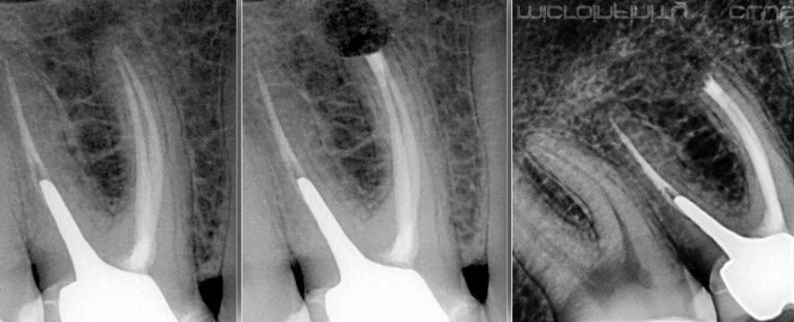
Фото якраз і демонструє, як добре загоївся дефект після операції. Пацієнтка зберегла ортопедичну конструкцію, зберегла час, і ситуація в порожнині не змінилася з точки зору естетики.
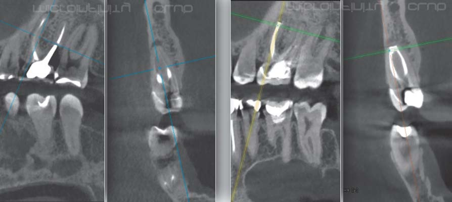
Висновки
Успішність сучасного методу апікальної хірургії становить понад 92%. Тобто таке втручання з ретроградним препаруванням та обтурацією – надійний варіант первинного лікування апікального періодонтиту. І особливо важливим є використання спеціального інструментарію та операційного мікроскопа. Також необхідно мати ґрунтовні знання анатомії кореневого каналу, знати, яка група зубів має особливості апікальної ділянки. Потрібно вміти правильно читати прицільні рентгенограми, встановлювати діагноз.
Часто читаю коментарі про те, що не можна провадити апікальну хірургію без попереднього переліковування кореневої системи, але це дуже старе бачення ситуації і свідчення відсутності знань у цьому сегменті ендодонтичного лікування.
Уже є достатньо книжок з апікальної хірургії, і видання зовсім не нові. Просто нагадаю, що розвиток апікальної хірургії почався ще в 92 році минулого сторіччя.
Отже, всім бажаю розвитку в цьому напрямку – лікарі вчаться все життя, і в залежності від отриманої, зазвичай нової інформації часто ті чи інші аксіоми чи догми в голові лікаря змінюються. Саме це дає старт для нових досягнень!